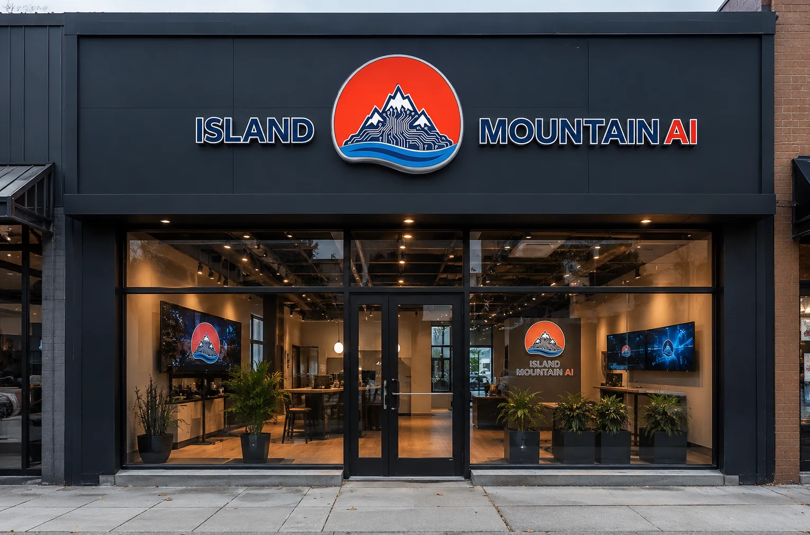

A on-premise build, sized and configured for a tribal government deployment

Island Mountain is a forward-deployed AI consultancy for organizations that cannot, or will not, send their data to the cloud. We embed on-site, learn how the work runs from the people who run it, then build the on-premise system around it.
AI is changing how every industry operates. But for organizations handling privileged, classified, or sovereignty-protected data, the cloud is not an option. Attorney-client communications, patient health records, ITAR-controlled defense data, and tribal governance information all carry legal obligations that cloud AI services cannot satisfy.
Island Mountain was founded to solve that problem the way it needs solving: on-site, in the room, alongside the people whose work the system is supposed to help. No cloud accounts. No API keys. No per-token billing. No data leaving your building.
The hardware question got easy. Hardware and open weights move fast enough that the right answer changes month to month, and we work that way on purpose. There's no catalog here and no set specs: we'll configure and deploy any hardware and software combination the work calls for, and the recommendation doesn't exist until Discovery has shown what you do. A couple of desktop-class machines and a few laptops is as real an answer as a large estate on rack-mounted accelerators with adjacent data racks. That part is procurement. The part that decides whether a deployment survives contact with your organization is whether anyone bothered to learn how you operate.
The work runs in four movements. We immerse on-site with senior employees, managers, and founders. We discover the use-cases already latent in the organization, most of which nobody has said out loud yet. Basho recommends the stack purchase for what Discovery turned up, and we configure and deploy it together, on-site, with room to grow. Then he onboards your team, because a deployment nobody can run is a very expensive shelf.
That last movement is bigger than it sounds, and it is the one organizations tend to picture smallest. Onboarding here means building the workflows your people run, wired end to end from what Discovery turned up, and then the agentic orchestration that carries multi-step work without someone babysitting every hop. Built for your vertical and for what you sell or do, because a workflow shaped for a law firm is the wrong shape for an emergency operations center. When Basho leaves, the people who run the work can change those workflows without calling anyone. That is the only definition of a finished deployment worth using.
Most of it is translation and synthesis: watching a workflow run, understanding where it hurts, and building something shaped like the answer. Technology that ignores expertise gets ignored by the experts.
Island Mountain is a California company founded by Basho Parks. The person who sits with your staff, maps the workflow, and designs the system is the same person who answers your phone call (1-341-441-8740) six months later when you have a question.
That's the method, not a limitation. Nobody hands your workflow notes to a delivery team who never met your records clerk. There is no discovery phase billed by a consultancy that then subcontracts the build, and no account manager standing between you and the engineering.
Founder | Forward Deployed Engineer
Runs the deployments end to end: the shadowing, the workflow translation, the system design, and the build. Project manager and technical writer by background, with direct relationships across tribal governments, defense contractors, and research institutions, and the procurement fluency to make an on-premise purchase survive a regulated approval chain. Intimate knowledge of the compliance, connectivity, and sovereignty pressures that make cloud AI a non-starter.
A on-premise build, sized and configured for a tribal government deployment
Systems are configured to operate with zero internet connectivity. Models, software, and updates are pre-loaded. Your data never needs to leave your network for any reason.
No subscriptions. No per-seat licensing. No per-token API charges. You own the hardware and the open-weight models both. Ongoing costs are limited to electricity and your own IT staff time.
We shadow the staff who run the workflow before anything gets specced. The system ends up shaped like the work, which is the difference between software people use and software people route around.
Most regulated organizations pay $100-150K per year to a managed services provider for "one voice to talk to." The actual service is tiered, scripted, and designed to upsell. Real help costs extra. Island Mountain is the opposite: the engineer who sat with your staff and designed the system is the one who picks up. No ticket queues, no tier-one scripts, no escalation chains. Accountability is included, not sold as an add-on.
We deploy into eleven markets, each with distinct regulatory or sovereignty requirements that make cloud AI a non-starter:
Law Firms - Attorney-client privilege under ABA Model Rule 1.6 creates an affirmative duty to protect client data. Cloud AI services cannot guarantee that obligation is met. Learn more about local AI for law firms.
Medical Practices - HIPAA compliance without a Business Associate Agreement. Your patient data stays on your hardware, in your building. Learn more about HIPAA-compliant AI.
Defense Contractors - ITAR, CUI, and CMMC-regulated data cannot touch commercial cloud infrastructure. Air-gapped local inference is the only compliant path. Learn more about ITAR-compliant AI hardware.
Tribal Nations - Data sovereignty is a right, not a feature request. OCAP principles (Ownership, Control, Access, Possession) require that tribal data remain under tribal control. Learn more about tribal data sovereignty AI.
Research Labs - Unpublished findings, grant-funded datasets, and pre-patent IP need to stay off commercial servers. Learn more about local AI for research labs.
Financial Services - GLBA, PCI DSS, and SEC Reg S-P create strict data handling obligations that cloud AI vendors cannot contractually guarantee. Learn more about local AI for financial services.
Insurance - Health insurers face HIPAA exposure while all carriers contend with NAIC Model Law #668 and state-level data privacy mandates. Learn more about local AI for insurance.
Energy & Utilities - NERC CIP, IEC 62443, and TSA Pipeline Security directives require that operational technology data remain isolated from commercial cloud environments. Learn more about local AI for energy and utilities.
Government - FedRAMP, FISMA, and NIST SP 800-171 compliance for CUI creates procurement barriers that on-premises infrastructure eliminates entirely. Learn more about local AI for government agencies.
Education - FERPA and COPPA protections mean student data cannot be processed by third-party AI services without explicit consent frameworks most districts lack. Learn more about local AI for education.
Casino Gaming - Title 31 BSA/AML obligations, NIGC MICS requirements, and state gaming commission oversight demand that patron and financial data stay under operator control. Learn more about local AI for casino gaming.
Across every one of these, the deployment keeps regulated data on your premises - one component of a compliant program, not a certification. HIPAA, ITAR, CMMC, and the rest still depend on your organization's own policies, controls, and agreements, which the hardware supports but does not replace.
Whether you want to walk through what a deployment looks like, talk through a workflow that is eating your staff alive, or just ask how local inference works, we are here.
Start a Scoping CallOr call directly: 1-341-441-8740